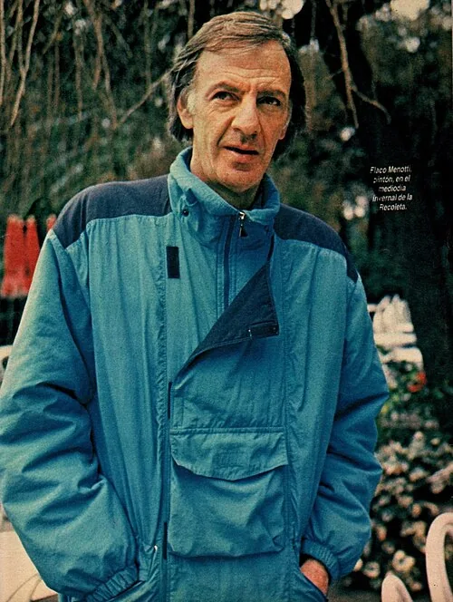

Photo source ↗"Photos: RICARDO ALFIERI (son), ANTONIO CARRERA/TAO (Madrid) and "EL GRAFICO" ARCHIVE" · Public domain
The profile
César Luis Menotti
César Luis Menotti was an Argentine coach associated with an attacking style and technically gifted players. He took charge of the national team before its home World Cup.
Menotti coached Huracán before taking charge of Argentina. He favoured a side that could keep the ball and create chances through technical play.
Menotti led Argentina to its first World Cup title in 1978. His side beat the Netherlands 3–1 after extra time in the final in Buenos Aires.
1978Argentina
Champion
Group A Argentina2 : 1Hungary
- Leopoldo LUQUE15′
- Daniel BERTONI83′
- Karoly CSAPO10′
Argentinahome
Starting lineup
- Ubaldo FILLOL
- Luis GALVAN
- Jorge OLGUIN
- Daniel PASSARELLA
- Alberto TARANTINI
- Osvaldo ARDILES
- Americo GALLEGO
- Rene HOUSEMAN
- Jose VALENCIA
- Mario KEMPES
- Leopoldo LUQUE
Substitutions
- 67′Daniel BERTONI on · Rene HOUSEMAN off
- 75′Norberto ALONSO on · Jose VALENCIA off
Hungaryaway
Starting lineup
- Sandor GUJDAR
- Peter TOROK
- Istvan KOCSIS
- Jozsef TOTH
- Zoltan KEREKI
- Sandor ZOMBORI
- Tibor NYILASI
- Sandor PINTER
- Karoly CSAPO
- Laszlo NAGY
- Andras TOROCSIK
Substitutions
- 45+1′Gyozo MARTOS on · Peter TOROK off
Group A Argentina2 : 1France
- Daniel PASSARELLA45′ · pen.
- Leopoldo LUQUE73′
- Michel PLATINI60′
Argentinahome
Starting lineup
- Ubaldo FILLOL
- Luis GALVAN
- Jorge OLGUIN
- Daniel PASSARELLA
- Alberto TARANTINI
- Osvaldo ARDILES
- Americo GALLEGO
- Rene HOUSEMAN
- Jose VALENCIA
- Mario KEMPES
- Leopoldo LUQUE
Substitutions
- 64′Norberto ALONSO on · Jose VALENCIA off
- 71′Oscar ORTIZ on · Norberto ALONSO off
Franceaway
Starting lineup
- Jean Paul BERTRAND DEMANES
- Patrick BATTISTON
- Maxime BOSSIS
- Christian LOPEZ
- Marius TRESOR
- Dominique BATHENAY
- Henri MICHEL
- Michel PLATINI
- Bernard LACOMBE
- Dominique ROCHETEAU
- Didier SIX
Substitutions
- 55′Dominique BARATELLI on · Jean Paul BERTRAND DEMANES off
Group A Italy1 : 0Argentina
- Roberto BETTEGA67′
Italyhome
Starting lineup
- Dino ZOFF
- Mauro BELLUGI
- Antonio CABRINI
- Claudio GENTILE
- Gaetano SCIREA
- Giancarlo ANTOGNONI
- Romeo BENETTI
- Marco TARDELLI
- Franco CAUSIO
- Roberto BETTEGA
- Paolo ROSSI
Substitutions
- 6′Antonello CUCCUREDDU on · Mauro BELLUGI off
- 73′Renato ZACCARELLI on · Giancarlo ANTOGNONI off
Argentinaaway
Starting lineup
- Ubaldo FILLOL
- Luis GALVAN
- Jorge OLGUIN
- Daniel PASSARELLA
- Alberto TARANTINI
- Osvaldo ARDILES
- Americo GALLEGO
- Jose VALENCIA
- Daniel BERTONI
- Mario KEMPES
- Oscar ORTIZ
Substitutions
- 72′Rene HOUSEMAN on · Oscar ORTIZ off
Second-phase Group 2 Argentina2 : 0Poland
- Mario KEMPES16′
- Mario KEMPES71′
Argentinahome
Starting lineup
- Ubaldo FILLOL
- Luis GALVAN
- Jorge OLGUIN
- Daniel PASSARELLA
- Alberto TARANTINI
- Osvaldo ARDILES
- Americo GALLEGO
- Rene HOUSEMAN
- Jose VALENCIA
- Daniel BERTONI
- Mario KEMPES
Substitutions
- 45+1′Ricardo VILLA on · Jose VALENCIA off
- 83′Oscar ORTIZ on · Rene HOUSEMAN off
Polandaway
Starting lineup
- Jan TOMASZEWSKI
- Henryk MACULEWICZ
- Antoni SZYMANOWSKI
- Wladyslaw ZMUDA
- Adam NAWALKA
- Henryk KASPERCZAK
- Bohdan MASZTALER
- Kazimierz DEYNA
- Grzegorz LATO
- Andrzej SZARMACH
- Zbigniew BONIEK
Substitutions
- 64′Wlodzimierz MAZUR on · Bohdan MASZTALER off
Second-phase Group 2 Argentina0 : 0Brazil
Argentinahome
Starting lineup
- Ubaldo FILLOL
- Luis GALVAN
- Jorge OLGUIN
- Daniel PASSARELLA
- Alberto TARANTINI
- Osvaldo ARDILES
- Americo GALLEGO
- Daniel BERTONI
- Mario KEMPES
- Leopoldo LUQUE
- Oscar ORTIZ
Substitutions
- 45+1′Ricardo VILLA on · Osvaldo ARDILES off
- 60′Norberto ALONSO on · Oscar ORTIZ off
Brazilaway
Starting lineup
- LEAO
- TONINHO
- OSCAR
- AMARAL
- RODRIGUES NETO
- DIRCEU
- BATISTA
- CHICAO
- GIL
- JORGE MENDONCA
- ROBERTO DINAMITE
Substitutions
- 34′EDINHO on · RODRIGUES NETO off
- 67′ZICO on · JORGE MENDONCA off
Second-phase Group 2 Argentina6 : 0Peru
- Mario KEMPES21′
- Alberto TARANTINI43′
- Mario KEMPES48′
- Leopoldo LUQUE50′
- Rene HOUSEMAN67′
- Leopoldo LUQUE72′
Argentinahome
Starting lineup
- Ubaldo FILLOL
- Luis GALVAN
- Jorge OLGUIN
- Daniel PASSARELLA
- Alberto TARANTINI
- Americo GALLEGO
- Omar LARROSA
- Daniel BERTONI
- Mario KEMPES
- Leopoldo LUQUE
- Oscar ORTIZ
Substitutions
- 64′Rene HOUSEMAN on · Daniel BERTONI off
- 85′Miguel OVIEDO on · Americo GALLEGO off
Peruaway
Starting lineup
- Ramon QUIROGA
- Jaime DUARTE
- Rodolfo MANZO
- Hector CHUMPITAZ
- Roberto ROJAS
- Jose VELASQUEZ
- Cesar CUETO
- Alfredo QUESADA
- Juan MUNANTE
- Teofilo CUBILLAS
- Juan Carlos OBLITAS
Substitutions
- 51′Raul GORRITI on · Jose VELASQUEZ off
Final Argentina3 : 1Netherlands
- Mario KEMPES38′
- Mario KEMPES105′
- Daniel BERTONI115′
- Dick NANNINGA82′
Argentinahome
Starting lineup
- Ubaldo FILLOL
- Luis GALVAN
- Jorge OLGUIN
- Daniel PASSARELLA
- Alberto TARANTINI
- Osvaldo ARDILES
- Americo GALLEGO
- Daniel BERTONI
- Mario KEMPES
- Leopoldo LUQUE
- Oscar ORTIZ
Substitutions
- 65′Omar LARROSA on · Osvaldo ARDILES off
- 74′Rene HOUSEMAN on · Oscar ORTIZ off
Netherlandsaway
Starting lineup
- Jan JONGBLOED
- Jan POORTVLIET
- Ruud KROL
- Ernie BRANDTS
- Wim JANSEN
- Arie HAAN
- Willy VAN DE KERKHOF
- Johan NEESKENS
- Rene VAN DE KERKHOF
- Rob RENSENBRINK
- Johnny REP
Substitutions
- 59′Dick NANNINGA on · Johnny REP off
- 72′Wim SUURBIER on · Wim JANSEN off